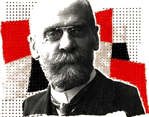
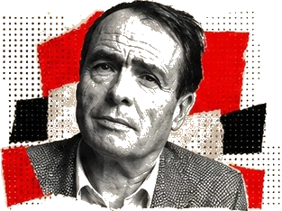
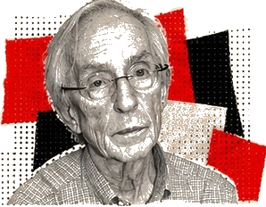
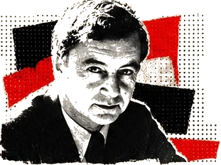
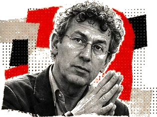

ÉMILE DURKHEIM
NORMA, ANOMIA E PUNIÇÃO
A ordem social depende de vínculos e regras
coletivas. Punir também reafirma valores:
que práticas a sociedade transforma em
ameaça moral?

SOB EFEITO
PÁGINA 12
Não são seis biografias. São seis perguntas sociológicas aplicadas à revista.

A ordem social depende de vínculos e regras
coletivas. Punir também reafirma valores:
que práticas a sociedade transforma em
ameaça moral?

Gostos, ambientes e linguagem podem
expressar posição social. Por que uma bebida
pode indicar “requinte” para uns e
“desqualificação” para outros?
Veja: pág. 08.

O desvio depende também da aplicação
de regras. Quem recebe o rótulo de usuário?
Quem é definido como traficante?
Veja: pág. 11.

Um atributo desvalorizado pode dominar
a imagem pública da pessoa. Quando “drogado”
substitui todas as outras identidades,
que portas se fecham?
Instituições também classificam, observam
e regulam comportamentos. Como proteger
direitos sem transformar cada atendimento
em vigilância?

Vulnerabilidade e formas de controle se
distribuem territorialmente. Quem é protegido,
quem é vigiado e quem é deslocado nos
espaços urbanos?